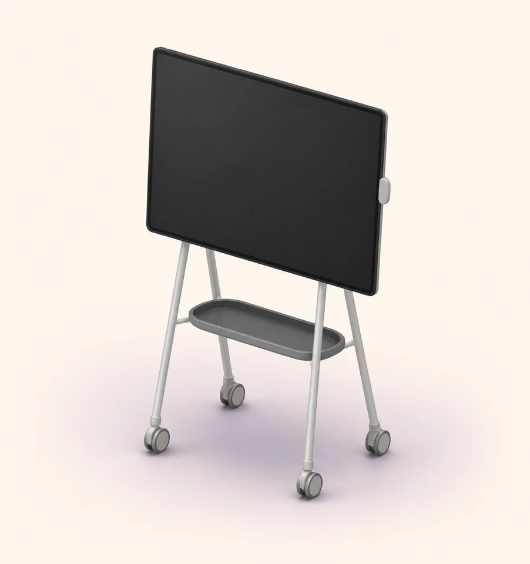

The app hiding inside a 50-inch problem
One tap.
Ninety degrees.
Zero menus.
Microsoft gave the Surface Hub a rotating stand. Then Windows hid rotation in Settings. So I built the missing button. It’s free, tiny, and does exactly one thing—an increasingly suspicious concept in software.
Start with 337 KB. If Windows complains about .NET 8, install it—or grab the 68 MiB version that packed its own.
